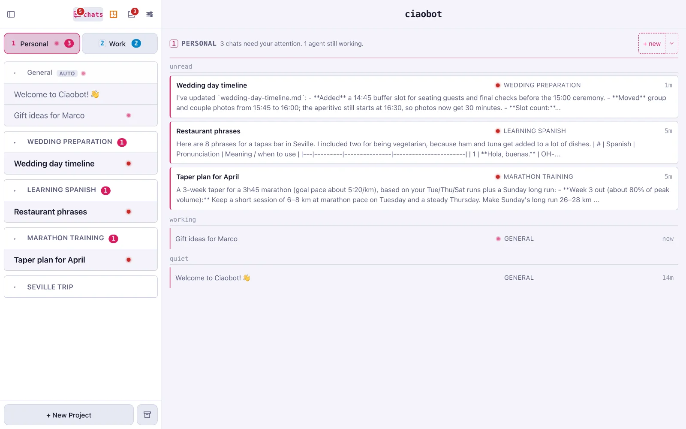
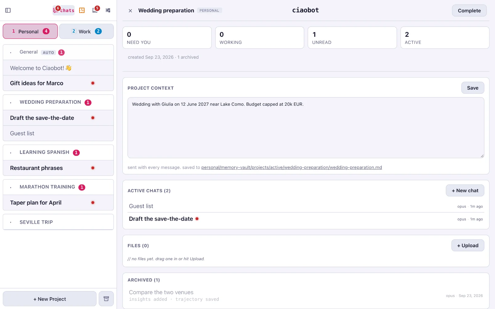
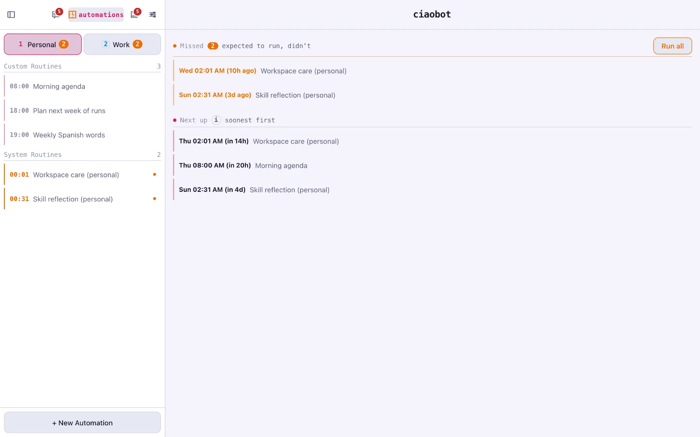

Getting started
From install to your first archived chat
About 15 minutes. You don't need to be technical, but you'll paste a command into the Terminal app.
Set up
-
Have Claude Code or opencode signed in
Ciaobot doesn't have its own AI account or API key. It drives an AI tool you already use, so you need one of these two installed and signed in on the computer that runs Ciaobot:
Claude Code
Use your Claude subscription (or an Anthropic API key).
curl -fsSL https://claude.ai/install.sh | bash claude auth loginopencode
Use OpenAI, OpenRouter, Z.ai, Ollama Cloud, a local Ollama and many more.
curl -fsSL https://opencode.ai/install | bash opencode auth loginYou can set up both and switch per workspace or per chat. How the two work with Ciaobot →
-
Install Ciaobot
On a Mac with Apple Silicon (M1 or newer, macOS 13 or later), open the Terminal app and paste:
curl -fsSL https://github.com/raffaelefarinaro/ciaobot/releases/latest/download/install.sh | shThis installs the Ciaobot app and starts it in the background. Hosting it on a Linux server instead? See Run it on a server.
-
Follow the setup wizard
The Ciaobot app opens by itself (you can also go to http://localhost:8443). The wizard asks for three things:
- A folder where Ciaobot keeps your notes and memory. A new, empty folder is fine. If you already keep notes in a folder (for example an Obsidian vault), you can point it there.
- A password for the dashboard. You'll need it to open Ciaobot from other devices.
- Your AI tool: Claude Code or opencode.
Once it's done, Ciaobot opens a welcome chat and can give you a tour. Just say yes.
Find your way around

Press the number keys 1, 2, … to jump between workspaces in the order they appear in the sidebar.
Your first project
Think of something you'll keep coming back to, like a trip you're planning, a language you're learning or a project at work. The easiest way to create a project is to ask:
Ciaobot creates the project and saves that description. From now on it's sent with every chat in Learning Spanish, so you never repeat it. You can also use + New Project at the bottom of the sidebar.

The everyday habit
-
Start a new chat in the right project
Use + new on the home screen. The small arrow next to it lets you choose the project. Or press ⌘+T.
-
Do one task
Talk to it as you would to an assistant: "Add a dentist appointment next Tuesday at 3pm", "Give me five phrases for ordering at a restaurant".
-
Archive it as soon as the task is done
Use the archive button in the chat header, press ⌘+⌫, or just type "archive this chat".
Archiving a finished chat. It moves to tidying up while Ciaobot reads it back and files what's worth keeping. -
Glance at suggestions now and then
Anything Ciaobot isn't sure about waits for your OK. More on memory →
Why not keep one chat going?
AI models get measurably worse as a conversation grows: details from the start get missed and unrelated topics bleed into each other. Researchers call this context rot, and Anthropic's guide to context engineering explains why a short, focused context works better. A long chat is also slower and more expensive, and Ciaobot only learns from it once you archive it. Short chats keep your assistant sharp and up to date.
Need to pick up an archived chat later? Open it and choose Continue in new chat.
Let it work on a schedule
Ask for anything that should happen regularly:
Ciaobot shows you a draft (when it runs, and in which project) and asks before creating it. Each run leaves its result in a chat. You can see and pause everything on the Automations page.
That's the whole routine. For everything else, see what it can do → or just ask it "what can you do?"

Questions
What does it cost?
Ciaobot is free and open source. You pay only for the AI you already use: a Claude subscription, an API key, or nothing at all with a local model.
What leaves my computer?
The messages you send, plus the context each chat needs, go to the AI provider you chose. Your notes, memory and chat history stay in your folder. With a local model through opencode, nothing leaves at all.
Does it work offline?
With a local model (for example Ollama) through opencode, yes. Google, web search and cloud models need a connection, of course.
Something's wrong. Where do I look?
Ask Ciaobot first ("why did my morning agenda not run?"); it can read its own logs and diagnose most problems. It can also report the bug on GitHub for you.
How do I update or uninstall?
When a new version is out, the menu bar icon shows Update to …. To remove the app, run ciao desktop uninstall in the Terminal; your notes folder is kept.